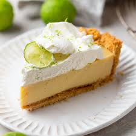

Authentic Gluten Free Key Lime Pie (Florida Keys Style)

The Key lime pie is a popular dessert know for its sweet, tart,
creamy filling made from key lime juice, sweetened condesed milk and egg yolks.
It is a classic dessert with a history rooted in South Florida.
The pie is named after the key limes, a small, aromatic, and tart variety
of lime native to the Florida Keys, which gives the dessert a distictive flavor
and yellow color.
Ingredients
For the Crust:
- 1 3/4 cups (about 170-200g) gluten-free graham cracker crumbs (store-bought or homemade)
- 2-4 tablespoons granulated sugar (can be variable for taste)
- 4-8 tablespoons (56-112g) unsalted butter, melted
- Pinch of salt
For the Filling:
- 4 large egg yolks (room temperature)
- 1 tablespoon key lime zest (about 3-4 key limes)
- 1 can (14oz) sweetened condensed milk (for extra creaminess, use 2 cans as some recipes do)
- 1/2 to 3/4 cup key lime juice (freshly squeezed from key limes)
- 1/2 teaspoon vanilla extract (optional)
For the Topping:
- 1 cup heavy whipping cream
- 2-3 tablespoons powdered sugar
- 1/2 teaspoon vanilla extract
- Extra key lime zest or thin lime slices for garnish
Instructions
1. Prepare the Crust:
- Preheat oven to 350 F (177 C)
- Crush gluten-free graham crackers into fine crumbs using hands
- Mix crumbs, sugar, melted butter, and salt until mixture resembles wet sand
- Press firmly into the bottom and up the sides of a 9-inch pie pan
- Bake for 8-12 minutes until golden and fragrant. Let cool slightly
2. Make the Filling:
- In a mixing bowl, beat the egg yolks and lime zest for 2-3 minutes until slightly thickened and pale
- Add sweetened condensed milk and beat for another 2 minutes
- Stir in key lime juice and vanilla extract until fully combined
- Pour filling into the cooled crust and smooth the top
3. Bake the Pie:
- Bake at 350 F for 15 to 20 minutes, until the edges are set and the center is just slightly jiggly (it will firm up as it cools)
- Remove from the oven and let cool to room temperature for atleast 30 minutes
- Refridgerate for atleast 3 hours (overnight is best) for the perfect texture
4. Make the Whipped Cream Topping:
- Whip heavy cream with powdered sugar and vanilla until stiff peaks form
- Pipe or dollop over chilled pie before serving
- Garnish with lime zest or thin lime slices for a classic look
Home